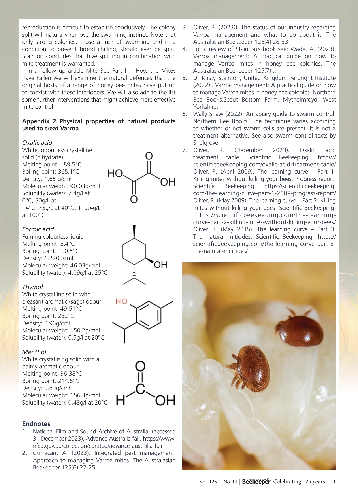

In a follow up article Mite Bee Part II – How the Mitey
have Fallen we will examine the natural defences that the
original hosts of a range of honey bee mites have put up
to coexist with these interlopers. We will also add to the list
some further interventions that might achieve more effective
mite control.
Appendix 2 Physical properties of natural products
used to treat Varroa
Oxalic acid
White, odourless crystalline
solid (dihydrate)
Melting point: 189.5°C
Boiling point: 365.1°C
Density: 1.65 g/cm³
Molecular weight: 90.03g/mol
Solubility (water): 7.4g/l at
0°C, 30g/L at
14°C, 75g/L at 40°C, 119.4g/L
at 100°C
Formic acid
Fuming colourless liquid
Melting point: 8.4°C
Boiling point: 100.5°C
Density: 1.220g/cm³
Molecular weight: 46.03g/mol
Solubility (water): 4.09g/l at 25°C
Thymol
White crystalline solid with
pleasant aromatic (sage) odour
Melting point: 49-51°C
Boiling point: 232°C
Density: 0.96g/cm³
Molecular weight: 150.2g/mol
Solubility (water): 0.9g/l at 20°C
Menthol
White crystallising solid with a
balmy aromatic odour
Melting point: 36-38°C
Boiling point: 214.6°C
Density: 0.89g/cm³
Molecular weight: 156.3g/mol
Solubility (water): 0.43g/l at 20°C
Endnotes
1. National Film and Sound Archive of Australia. (accessed
31 December 2023). Advance Australia fair. https://www.
nfsa.gov.au/collection/curated/advance-australia-fair
2. Curracan, A. (2023). Integrated pest management:
Approach to managing Varroa mites. The Australasian
Beekeeper 125(6):22-25.
reproduction is difficult to establish conclusively. The colony
split will naturally remove the swarming instinct. Note that
only strong colonies, those at risk of swarming and in a
condition to prevent brood chilling, should ever be split.
Stainton concludes that hive splitting in combination with
mite treatment is warranted.
3. Oliver, R. (20230. The status of our industry regarding
Varroa management and what to do about it. The
Australasian Beekeeper 125(4):28-33.
4. For a review of Stainton’s book see: Wade, A. (2023).
Varroa management: A practical guide on how to
manage Varroa mites in honey bee colonies. The
Australasian Beekeeper 125(7):...
5. Dr Kirsty Stainton, United Kingdom Perbright Institute
(2022) . Varroa management: A practical guide on how
to manage Varroa mites in honey bee colonies. Northern
Bee Books.Scout Bottom Farm, Mytholmroyd, West
Yorkshire.
6. Wally Shaw (2022). An apiary guide to swarm control.
Northern Bee Books. The technique varies according
to whether or not swarm cells are present. It is not a
treatment alternative. See also swarm control texts by
Snelgrove.
7. Oliver,
R.
(December
2023).
Oxalic
acid
treatment
table.
Scientific
Beekeeping.
https://
scientificbeekeeping.com/oxalic-acid-treatment-table/
Oliver, R. (April 2009). The learning curve – Part 1:
Killing mites without killing your bees. Progress report.
Scientific
Beekeeping.
https://scientificbeekeeping.
com/the-learning-curve-part-1-2009-progress-report/
Oliver, R. (May 2009). The learning curve – Part 2: Killing
mites without killing your bees. Scientific Beekeeping.
https://scientificbeekeeping.com/the-learning-
curve-part-2-killing-mites-without-killing-your-bees/
Oliver, R. (May 2015). The learning curve – Part 3:
The natural miticides. Scientific Beekeeping. https://
scientificbeekeeping.com/the-learning-curve-part-3-
the-natural-miticides/
Vol. 125 | No. 11 |
Celebrating 125 years | 41